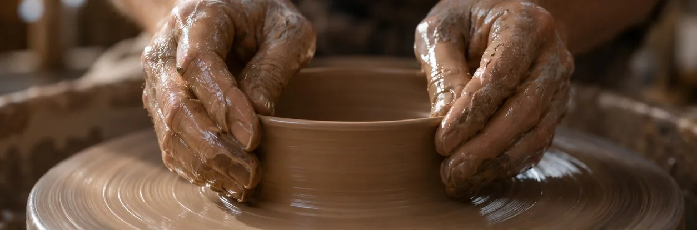
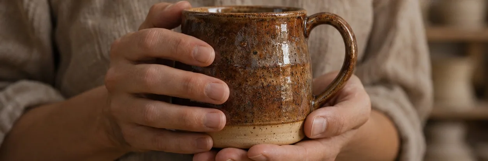
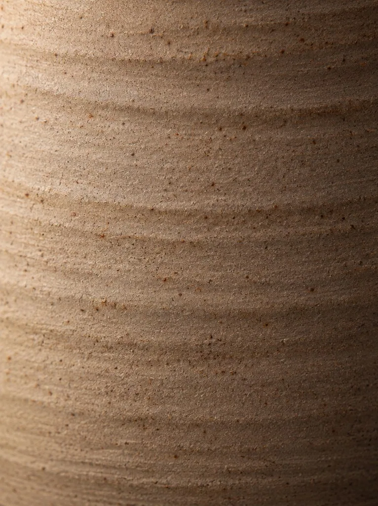

Korongozó kóstoló
Egy szombat délelőtt az első saját tálkádért. Gyere egyedül, vagy hozz magaddal valakit!
Megnézem a kóstolót
Korongozás kezdőknek Szentendrén
Szia, Fehér Dóra vagyok, keramikus. Megmutatom, hogyan formálj egy marék agyagból kis tálat. Egyszerre legfeljebb hatan korongozunk, így van időm melléd ülni.
Megnézem a tanfolyamokat
Egy szombat délelőtt az első saját tálkádért. Gyere egyedül, vagy hozz magaddal valakit!
Megnézem a kóstolótHárom kedd este egy tálkán és egy magasabb poháron is kipróbáljuk, mi múlik a kéztartáson.
Megnézem a 3 alkalmas tanfolyamotCsütörtök esténként gyakoroljuk az alapokat, aztán a saját ötletedből készíthetsz tálat vagy poharat.
Megnézem a 4 hetes kurzustÜljetek le a koronghoz a kollégáiddal egy háromórás csapatépítőre! Egy alkalomra legfeljebb hatan jöhettek.
Következő alkalom
10:00–13:00 · 18 000 Ft/fő
Az agyag, a máz és mindkét égetés benne van az árban.



Vedd kézbe a bögréket az udvari boltomban! Van, hogy úgy dől el, melyik az igazi, amikor valóban kézbe veszed.
2000 Szentendre, Bogdányi út 32.
Csütörtöktől vasárnapig 10:00–18:00